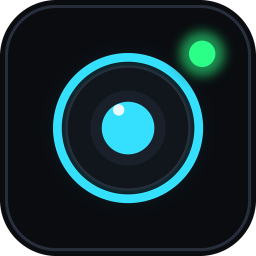

Deenstudio
Phone cameras over USB
Devices
Visual screen
Snap phones
Snap OBS / Prism
Mute all
Starting…
Starting…
Nothing selected yet
Choose your OBS or Prism window, or a whole screen, to see it here and snap a screenshot.
Choose what to capture
Cancel